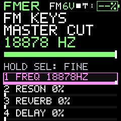

Companion
Edit and audition
Visual controls retain the exact underlying values and keep working changes explicit.
The Editor provides synth, envelope/modulation, effects and sequencing controls appropriate to the active engine. Frequency sliders use logarithmic scaling so low-frequency edits remain useful; the number is still the real Hz value. Named choices show their canonical values. Optional numeric entry supports precise settings. One slider gesture is one Undo action.
The bank destination is shown beside the loaded sound. Save there updates that PC bank entry. Save to Library captures a separate instrument or project item. Revert restores the editor's saved state. Opening another item asks before discarding unsaved changes.
Audition renders through the shared host synthesizer and provides playable audio with measured output information. Choose a note, chord, sequence or arp phrase where offered. A selected-pattern audition is not a complete four-track hardware performance qualification. Host rendering does not prove hardware timing or USB reliability.
FX profiles contain effect settings. Importing one preserves the synth and pattern data and can be undone. They are parameter presets, not downloadable executable effect plugins.
Saving refreshes the current PC banks without discarding your draft. If the destination changed in another tab or in PC sound banks, review its current name before replacing it; Cancel keeps both versions. If another change occurs during saving, nothing is overwritten and your edits remain available. Press Save again to review and retry. Opening PC sound banks refreshes saved names and slots.


